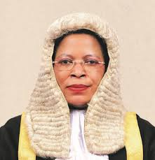

Meet Hon. Anita Annet Among
Anita Annet Among is the Speaker of the 11th Parliament of Uganda and Woman MP for Bukedea District. With a background in law, accounting, and leadership, she has dedicated her life to transforming communities and amplifying the voices of women and youth across the nation.
Biography Highlights
- Born: Bukedea, 1973
- Education: Accounting (Makerere), Law (KIU), MBA
- Political Journey: Formerly FDC, joined NRM in 2020
- Speaker of Parliament: Since 2022, known for pro-development leadership
Key Achievements
- Founded and built Bukedea Teaching Hospital
- Runs community schools employing 100+ local residents
- Strong advocate for peace, infrastructure, and women’s rights
- Improved local service delivery and road networks in Bukedea
Her Journey
Youth in Bukedea
Education & Degrees
Political Journey

Speaker Role